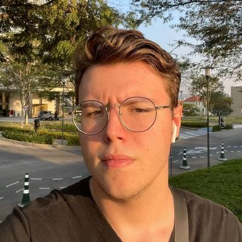

Gustavo De Almeida Bassanetto
Celular: +55 15 981188347 | Email: gustavo.almeidabassanetto@gmail.com |
Linkedin
| Nacionalidade: Brasileira | Idade: 19 anos

Atualmente sou estudante da FACENS (Faculdade de Engenharia de Sorocaba) em Análise e Desenvolvimento de Sistemas.
Meu foco em linguagens é mais voltado para o backend com linguagens como C#, Python e Java
mas também tenho familiaridade com frontend mexendo com JavaScript e TypeScript e frameworks como o Angular.
Graduações
Análise e Desenvolvimento de Sistemas | 2022 - 2023 (cursando o 4 semestre)
High School Griggs International Academy | 2018 - 2021
Experiência
Experiência de 2 Anos como Desenvolvedor Full Stack na Área de TI
Habilidades Técnicas:
- Frontend: HTML, CSS e Angular
- Backend: C# e Node.js
- Bancos de Dados: MySQL
- Frontend: HTML, CSS e Angular
- Ferramentas de Controle de Versão: Git
Projetos Pessoais
Como desenvolvedor de software, acredito no compartilhamento de código como forma de promover o aprendizado e a evolução da comunidade.
Por esse motivo, mantenho aplicativos gratuitos e de código aberto em meu repositório do
Github.